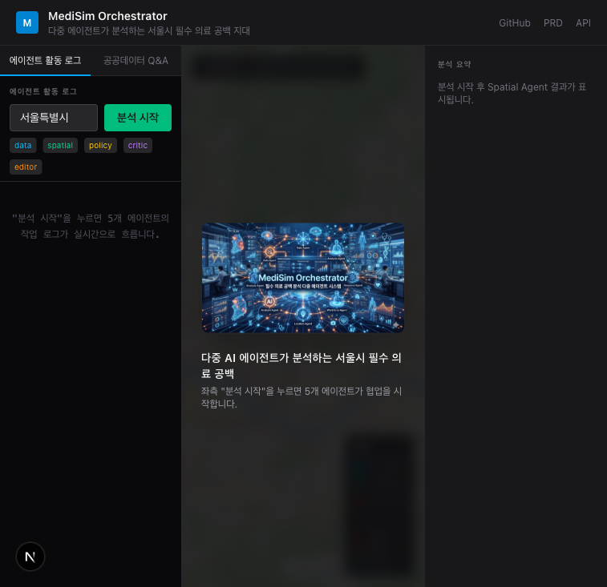
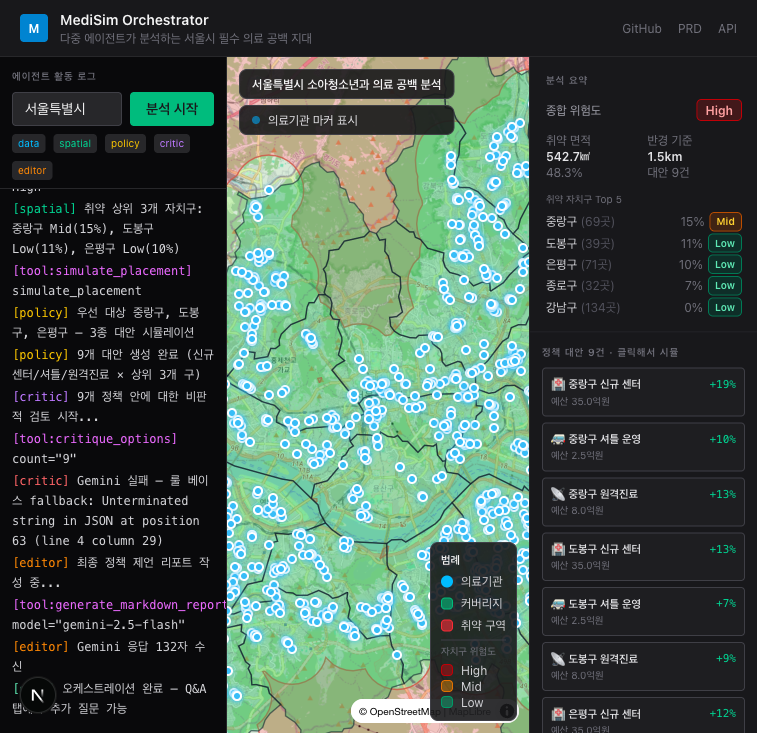
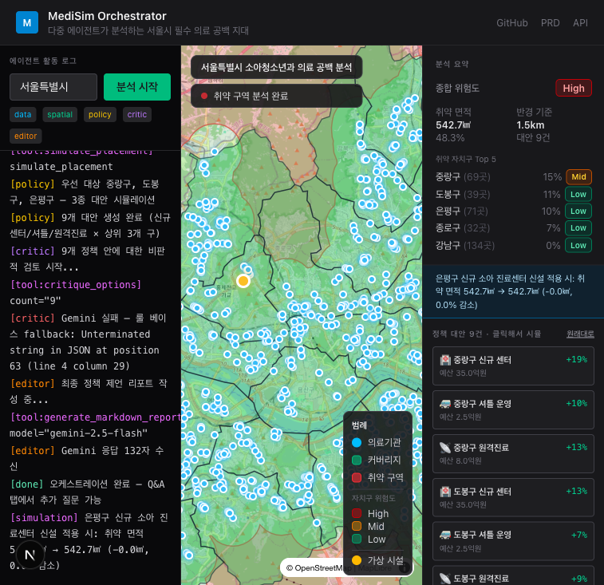
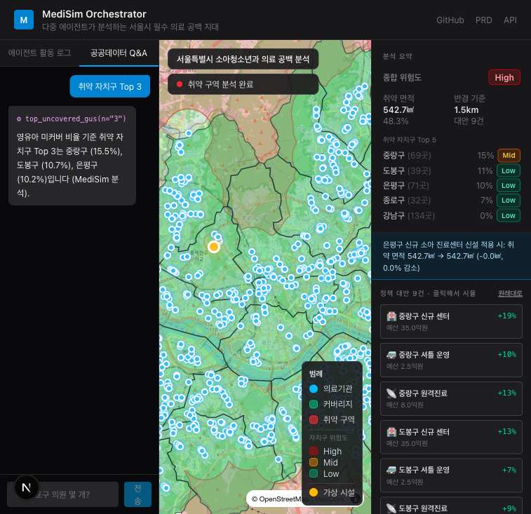

다중 AI 에이전트가 자율 분석하는 서울시 필수 의료 공백
— 정책 제언 리포트 발행까지 8분
slack: bckim0123-lab/medical_CMUX
소아청소년과 의원은 강남·송파·서초에 몰려있고, 외곽 자치구는 1.5km 도보 접근 가능한 의원이 없는 동이 다수.
그러나 "어디에 어떤 정책이 가장 효과적인가" 는 보건복지부 회의가 며칠씩 걸리는 문제.
💡 우리의 가설
사람이 데이터를 만지는 대신 AI 에이전트들이 협업해 분석부터 정책 발행까지 자동화한다. 8분.
Gemini Function Calling 으로 fetch_hira_api, fetch_kosis_api 자율 호출
Turf.js v7 — 1.5km 골든타임 버퍼 → union → 서울 영역과 차집합
상위 3 자치구 × 3종 대안 (신규센터·셔틀·원격진료) = 9개 시뮬레이션
각 정책 안에 대한 리스크·우려 한 문장 + low/mid/high 평가
위 모든 결과를 받아 B2G 표준 마크다운 정책 제언서 발행
Gemini Function Calling 으로 자치구 비교·정책 효과 자연어 질의. 의학적 조언 거부 + 가능한 질문 예시 제시.
정책 카드 클릭 → 가상 시설 1개 추가 → 지도에서 빨강 영역 즉시 줄어듦. 심사위원 직접 만지기.
자기 안에 반론을 단다 — 각 정책에 리스크 + severity. 의사결정자가 통째로 신뢰 못 하니까.
high severity 정책 즉시 재검토 trigger📄 Editor Agent 발행
B2G 표준 마크다운 정책 제언서
분석 개요 / 공간 취약성 / 우선순위 자치구 / 정책 대안 비교표 / Critic 검토 / 권고
"보건복지부 회의가 며칠씩 걸리는 일을 8분에."




분석 시작 → 5 에이전트 흐름 → 9 정책 카드 → What-if 시뮬 → Q&A 챗봇
Vercel 라이브 · 첫 분석 약 25초 (1,585개 의원 buffer union)
현재 서울 25개. 같은 파이프라인을 전국 250개 시군구 에 자동 적용 가능. fixture/Mock 분기로 API rate limit 우회.
Multi-agent orchestration for B2G public-health policy
질문·피드백 환영합니다.